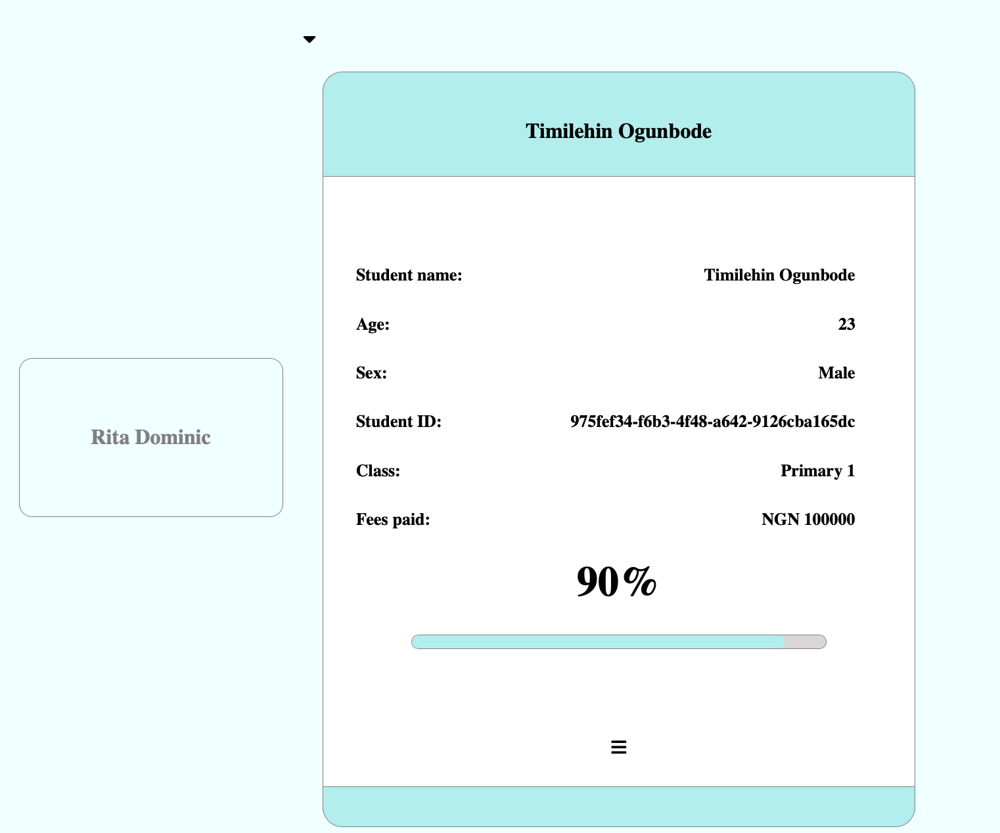
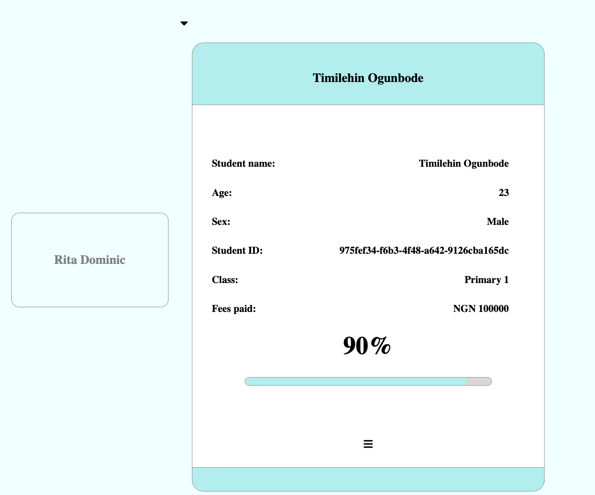

Fees manager
Are you a school administrator in Africa?...
Manage your school finances from the comfort of your desk. Get a personalized school, classroom and student payment progress view as you track payments.
Manage your school finances from the comfort of your desk. Get a personalized school, classroom and student payment progress view as you track payments.
Manage multiple schools/branches from your dashboard. Keep accurate data for your school's finances.

Register students from your dashboard and begin to keep track of their payments.
 

I am Opeyemi, an aspiring software engineer based in Lagos Nigeria who enjoys problem solving and hands on practical engagement. My passion for bulding has brought me into the world of technology. As part of my curriculum at Holberton school, we are required to build a project to solve a real life problem using the experience and technology stack we have learnt over the past nine months.
This project looks to solve the increasing problems of management (specifically finances in schools) using technology. This was inspired by an incident that happened in my mum's school, where a fraudulent member of staff defrauded the business of a huge sum of money. This was possible because fake receipts were returned by the staff member after each trip to the bank.
The idea of fees manager is to have each payment logged into the school's dashboard automatically for each student once the payment is made in their name. So far a working product has been built in regards requirements for the project at Holberton school. However, some improvements have to be made to reach the end goal which is to make payments reflect on the admin dashboard automatically. For now, payments can be logged manually to the dashboard with admin authorization.